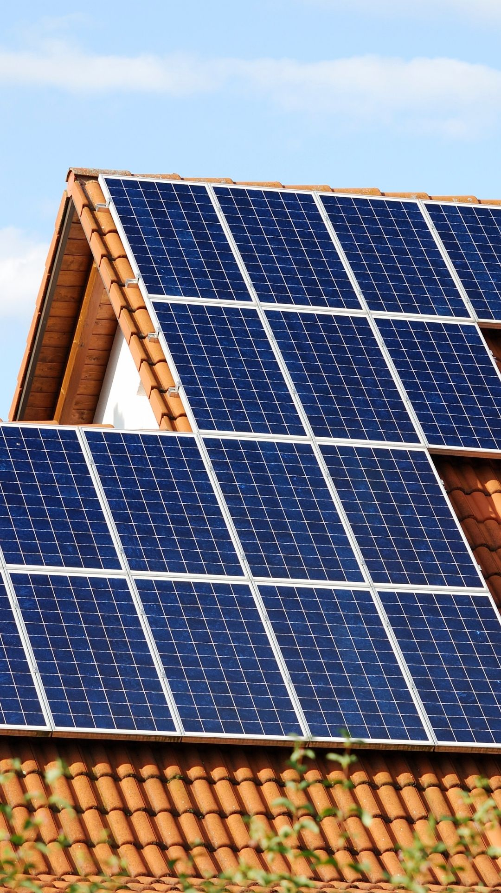
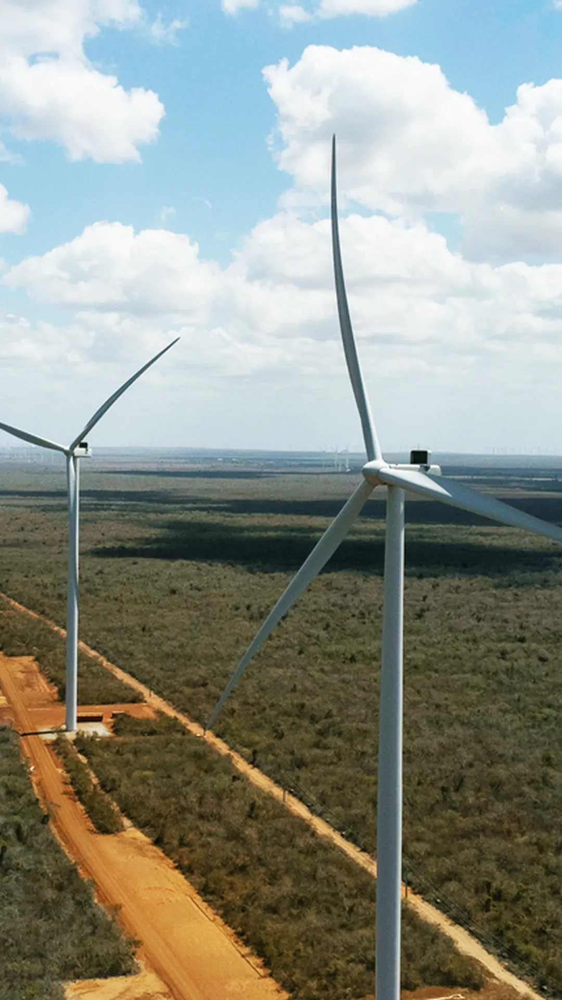
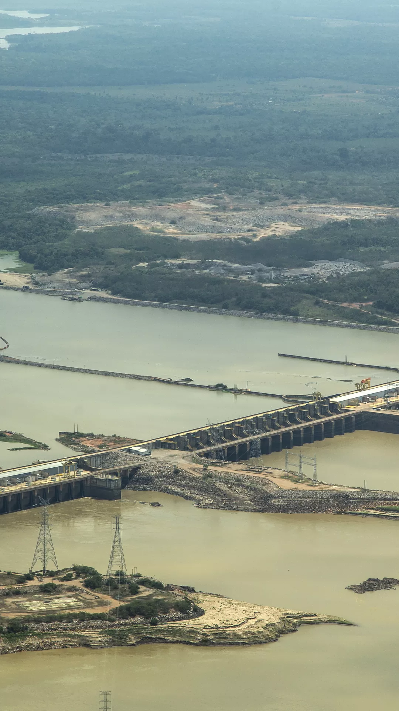

As fontes de energia renovável são aquelas que são obtidas a partir de recursos naturais que se regeneram rapidamente ou que são virtualmente ilimitados.
|  |  |  | |
|---|---|---|---|
| Energia solar: obtida a partir da radiação do sol, pode ser transformada em energia elétrica por meio de painéis fotovoltaicos ou em energia térmica por meio de coletores solares. | Energia eólica: obtida a partir do vento, pode ser transformada em energia elétrica por meio de turbinas eólicas. | Energia hidráulica: obtida a partir do movimento da água em rios, quedas d'água ou mares, pode ser transformada em energia elétrica por meio de usinas hidrelétricas. | Biomassa: obtida a partir da matéria orgânica, como restos de madeira, resíduos agrícolas e urbanos, pode ser transformada em energia elétrica por meio de usinas termoelétricas ou em energia térmica por meio de aquecedores ou caldeiras. |